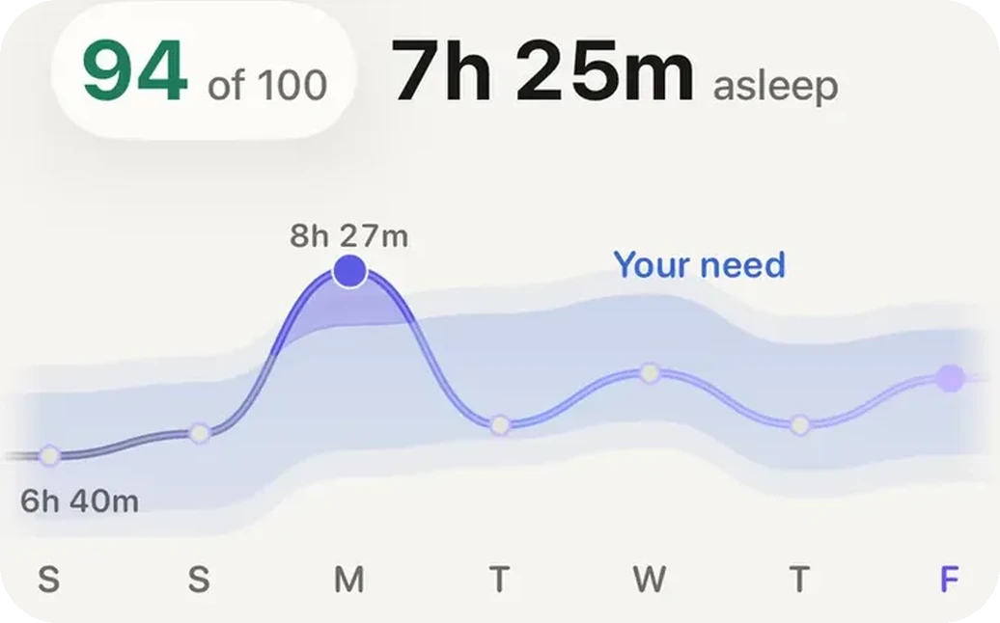
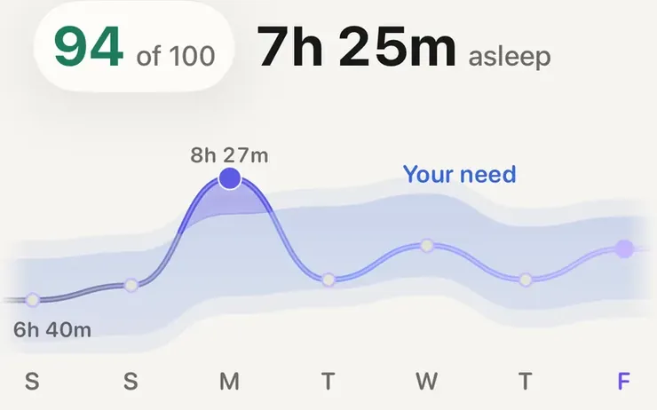

Praxis · Geräte

Wenn du schon eine Apple Watch trägst, hast du das Meiste bereits am Handgelenk. Schlafphasen, ein nächtlicher Schlafwert, nächtliche Vitalwerte, eine Schätzung der Cardiofitness und eine Ansicht der Trainingsbelastung sind eingebaut, ohne zusätzliche Gebühr. Was eine eigene App ergänzen kann, ist vor allem Einordnung: die Werte nebeneinander, gemessen an deinem eigenen Normalwert, und erklärt, was jede Zahl aussagen kann und was nicht.
All das gehört zur Uhr. Du brauchst ein aktuelles iPhone und aktuelle Software, und manche Funktionen hängen vom Modell ab.
WHOOP ist der bekannteste Tracker ohne Display. Er wird als Jahresmitgliedschaft in drei Stufen (One, Peak und Life) verkauft, der Sensor ist inklusive, und er erfasst Schlaf, Belastung und Erholung. WHOOP gibt für die Sensoren 5.0 und MG eine Akkulaufzeit von etwa 14 Tagen an, und der Akkupack lädt den Sensor, während du ihn weiter trägst. Ein Display hat das Gerät bewusst nicht. Aktuelle Preise stehen auf whoop.com.
Was du jeweils brauchst
So ein Armband passt besser zu dir, wenn du
Apple gibt für die Series 11 bis zu 24 Stunden normale Nutzung an, darin sechs Stunden Schlaftracking. Wer sie jede Nacht trägt, lädt also zu einer anderen Tageszeit. Vielen reicht dafür die Zeit unter der Dusche oder beim Frühstück.
Jedes Gerät am Handgelenk schätzt den Schlaf aus Bewegung und Puls. Es misst keine Hirnströme wie ein Schlaflabor. De Zambotti und Kollegen (2019) haben die Forschung zu Schlaf-Wearables ausgewertet: Schlaf und Wachsein unterscheiden sie meist gut, die einzelnen Phasen deutlich schlechter. Schyvens und Kollegen (2025) haben sechs Geräte am Handgelenk bei 62 Erwachsenen mit der Polysomnografie verglichen. Die Apple Watch Series 8 stimmte bei den Schlafphasen am besten überein, mit einem Cohens Kappa von 0,53. Das ist eine mäßige Übereinstimmung, keine perfekte. Die Schlafdauer und wie unruhig die Nacht war, kannst du also ernster nehmen als die Minuten Tief- oder REM-Schlaf. Mehr dazu: Schlafphasen der Uhr sind eine Schätzung (auf Englisch).
Schlaf und Wachsein trennt das Handgelenk gut, die einzelnen Phasen deutlich schlechter.
Auch Herzwerte brauchen Vorsicht. Plews und Kollegen (2013) empfehlen, die HRV als gleitenden Wochenschnitt an deiner eigenen Basislinie zu lesen, weil einzelne Morgen stark schwanken. Buchheit (2014) kommt für Herzfrequenzwerte allgemein zum selben Schluss: Der Verlauf gegenüber deinem eigenen Normalwert sagt mehr als jeder Einzelwert. Siehe was HRV eigentlich ist und warum eine Uhr dich mit dir selbst vergleichen sollte (beide auf Englisch).
Mehrere Apps für die Apple Watch lesen Apple Health und bauen darauf auf, jede auf ihre Art. Typisch sind:
Bevor du dich entscheidest, prüf drei Dinge: ob die App ein Konto verlangt, wo deine Gesundheitsdaten verarbeitet werden und was kostenlos ist und was nicht. Viele kannst du kostenlos ausprobieren.

Schlaf in AeraWert und Schlafdauer der letzten Nacht, darunter die Woche als Linie gegen deinen eigenen Schlafbedarf. So liest du eine kurze Nacht an dem, was du sonst brauchst.
Aera, für iPhone und Apple Watch
Aera ist für Schlaf und Laufen gemacht, und hinter jeder Zahl steckt ein Artikel im Field Guide, der zeigt, wie sie berechnet wurde und wo sie nicht mehr verlässlich ist. Es gibt kein Konto, und deine Gesundheitswerte werden auf deinem iPhone aus dem berechnet, was Apple Health schon gespeichert hat.
Der Schlafwert gewichtet, was das Handgelenk gut misst: Am meisten zählen die Schlafdauer gemessen an deinem eigenen Schlafbedarf und wie ungestört die Nacht war. Die Schlafphasen tragen wegen der oben beschriebenen Grenzen nur 10 von 100 Punkten bei. Trainings bekommen einen Belastungswert aus der Herzfrequenz, gemessen an deinem Normalwert, persönliche Bestzeiten über jede Distanz und einen Routenplaner, der echten Wegen folgt, mit Abbiegehinweisen auf dem iPhone oder der Apple Watch.
Kostenlos: deine Werte jeden Tag mit ihren letzten 30 Tagen, dein Schlaf mit seinen Phasen, dein Körperalter, die Auswertung jedes Trainings, alle Bestleistungen, der Routenplaner mit Abbiegehinweisen und fünf gespeicherten Routen, die 3D-Ansicht jedes Trainings mit GPS-Strecke aus den letzten sieben Tagen und die letzten 30 Tage jedes Exports. Premium ist freiwillig und ergänzt deinen ganzen Verlauf, die 3D-Ansicht älterer Trainings und als Video zum Teilen, mehr als fünf gespeicherte Routen und die längeren Berichte. Premium ist ein Abo: monatlich, jährlich oder 12 Monate monatlich bezahlt, die letzten beiden mit einer kostenlosen Probewoche. Oder ein Einmalkauf auf Lebenszeit, wenn du kein Abo willst. Den Preis in deiner Währung zeigt der App Store.
Aera ist kein Medizinprodukt. Die App braucht ein paar Wochen deiner Nächte und Trainings, bevor sich die Vergleiche mit deinem Normalwert einpendeln.
Ja. Schlafphasen, ein nächtlicher Schlafwert, nächtliche Vitalwerte, eine Schätzung der Cardiofitness und die Trainingsbelastung sind in der Apple Watch und in den Apps Health und Fitness auf dem iPhone enthalten, ohne zusätzliche Gebühr. Du brauchst nur die Uhr, ein aktuelles iPhone und aktuelle Software.
Für viele ja, vor allem wenn du schon eine hast. Sie deckt Schlaf, nächtliche Herzwerte und Trainingsbelastung ab. Ein eigenes Armband passt besser zu dir, wenn du ein Gerät rund um die Uhr tragen willst, das etwa zwei Wochen ohne Laden auskommt, oder wenn du nichts mit Display am Handgelenk haben möchtest.
Die Schlafdauer ist der verlässlichere Teil. Die Schlafphasen schätzt die Uhr aus Bewegung und Puls, sie misst nicht dein Gehirn. In einer Laborstudie von 2025 stimmte die Apple Watch von sechs getesteten Geräten am Handgelenk am besten mit der Polysomnografie überein, aber nur mäßig, nicht perfekt.
Vor allem Einordnung: Schlaf, Herzwerte und Training nebeneinander, jeder Wert über Wochen an deinem eigenen Normalwert gemessen und erklärt, wie er entsteht. Mehrere Apps machen das, jede auf ihre Art, und viele kannst du kostenlos ausprobieren.
Verwandte Notizen (auf Englisch): was ein Schlafwert bedeutet · was VO₂max auf der Uhr ist · was Trainingsbelastung ist · was eine Uhr nicht messen kann
Verwandter Ratgeber: Heute laufen nach schlechtem Schlaf?
 Oder mit dem iPhone scannen
Oder mit dem iPhone scannenKostenlos loslegen, ganz ohne Konto. Läuft mit der Uhr, die du schon trägst.